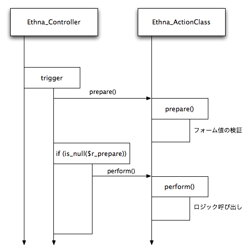

Ethna の ActionClass (アクションクラス) は MVC モデルでいうところの C (Controller) の一部です。
ユーザのリクエストによってアプリケーションが起動され、指定されたアクションが実行されます。アクションでは、ロジックの呼び出しを (場合によっては複数回) 行い、遷移先 (ViewClass) の決定をします。
ActionClass の決定は、デフォルトでは、次のようなルールで行われます。 ( UrlHandler を使ったり、 アクション名の決定方法を変更する などによって変更できます)
例えば、
http://example.com/?action_sample=true
という URL にアクセスされた場合、決定されるアクション名は Sample となります。
アクションは、主に次の役割を持っています:
ActionClass は、 ethnaコマンド を用いて次のように生成します。
$ ethna add-action sample
このとき、
このコマンドによって、次にようにファイルが生成されます。
$ ethna add-action sample
すると、次のように出力され、 app/action/Sample.php ファイルが生成されます。
file generated [/path/to/sample/skel/skel.action.php -> /path/to/sample/app/action/Sample.php]
action script(s) successfully created [/path/to/sample/app/action/Sample.php]
生成されたファイルには、指定した ActionClass と、対になる ActionForm が定義されます。アクション名とファイルは次のように、 _ 区切りがディレクトリ区切りに対応します。
| アクション名 | ファイル | クラス名 |
|---|---|---|
| index | app/action/Index.php | Sample_Action_Index |
| post_confirm | app/action/Post/Confirm.php | Sample_Action_PostConfirm |
| post_do | app/action/Post/Do.php | Sample_Action_PostDo |
参考:
ActionForm には、次の 2 つのメソッド prepare() と preform() が定義されます。
class Sample_Action_Sample extends Sample_ActionClass
{
public function prepare()
{
}
public function perform()
{
return 'sample';
}
}
prepare() は、フォームの検証などを行う、 perform() メソッドを実行する準備をするためのメソッドです。何事もなければ null を返し (あるいは return を省略し)、バリデーションの結果エラーが存在する場合には、遷移名を return することで、 perform() メソッドを実行せずに、任意の ViewClass や Template に遷移させることができます。
次の例では、フォーム値を検証し ($this->af->validate())、エラーが1つ以上ある場合、 error という名前の遷移先に遷移するよう、 'error' という文字列を return しています。
public function prepare()
{
if ($this->af->validate() > 0) {
return 'error';
}
}
prepare() メソッドと preform() メソッドの関係は以下のようになっていて、まず prepare() メソッドが呼ばれ、 prepare() メソッドが null を返した場合のみ perform() メソッドが呼び出されます。
要するに、 prepare() メソッドでフォーム値の検証を行うこと、 perform() メソッドでは全てのデータがバリデート済みであるという前提で処理を行うことが出来、安全且つ簡潔なコードが書けるというわけです。
なお、フォーム値の自動検証詳細については以下をご覧下さい。
perform() メソッドは、ロジックを処理するためのメソッドです。
遷移先とは、アクション実行後に呼び出される ViewClass (または Template) のことです。
ActionClass では、ここで説明した prepare() メソッド、 perform() メソッドと、 authenticate() の頁で説明する authenticate() メソッドの戻り値が遷移名となり、この遷移名に該当する ViewClass や Template が呼び出されます。
すでに説明したとおり、 Ethna の ActionClas は、コントローラの一部です。
Ethna による開発でのよくある間違いは、 ActionClass の preform() などに、非常に大きな・複雑なロジックを書いてしまうことです。肥大化した ActionClass は、アプリケーションの見通しを悪くし、メンテナンス性を著しく悪化させます。ロジックは AppManager や AppObject に記述します。
参考: